Authors: Haechan Kim, Yoonho Lee, Gisang Lee, Chelsea Finn, Kangwook Lee · ETH, Meta, Stanford, UW-Madison
Published: 2026-08-31 · Category: cs.LG
Citation: arXiv:2609.00196v1 · PDF · abstract page
WHALE Boosts Agent Success Rates by up to 24.38% Through Joint Weight-Harness Optimization
1. What It Is & Why It Matters
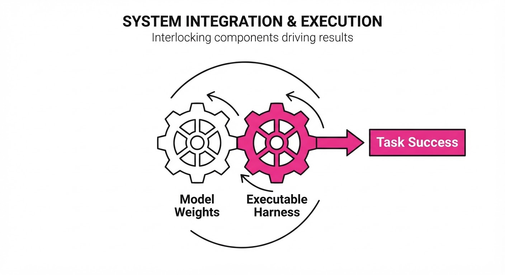
Modern AI agents are more than just Large Language Models (LLMs); they are complex systems composed of model weights (θ) and an "executable harness" (H)—the code, system prompts, tool-calling definitions, and control flow logic that dictate how the model interacts with its environment. Until now, practitioners have largely optimized these components in silos. The model is typically fine-tuned on static datasets, while the harness is manually "engineered" or optimized via separate, disconnected search loops.
This decoupling leads to "frozen" bottlenecks. A model fine-tuned to be more concise might fail if the harness still forces verbose outputs, or a model that has learned complex multi-step reasoning might be throttled by a harness that restricts its tool-calling frequency.
WHALE (Weight-Harness Alternating LEarning) breaks this cycle by treating the agent as a unified, co-evolving system. It recognizes that model weights and harness code are codependent: a weight update might unlock new reasoning capabilities that require a different harness to fully exploit. By treating the harness as a differentiable or searchable parameter alongside the model weights, WHALE ensures that the system's "brain" and its "interface" are always in sync.
- The Problem: Decoupled optimization leads to structural mismatch, where the model's emergent capabilities are stifled by a rigid or outdated harness.
- The Core Idea: An iterative loop that treats harness code as a first-class citizen, using alternating optimization to maximize the joint probability of task success.
- The Result: Significant performance gains in complex tasks like mathematical reasoning and search-based QA, reaching up to 24.38% higher accuracy.
🏭 Industry Angle: AI engineering teams building autonomous agents—such as customer service bots, coding assistants, or research agents—can use WHALE to automate the "prompt engineering" and "tool-tuning" lifecycle. By integrating WHALE into CI/CD pipelines, teams can reduce manual prompt tuning and ensure that as they update their base models, the system instructions evolve automatically to maintain peak agentic performance.
2. How It Works
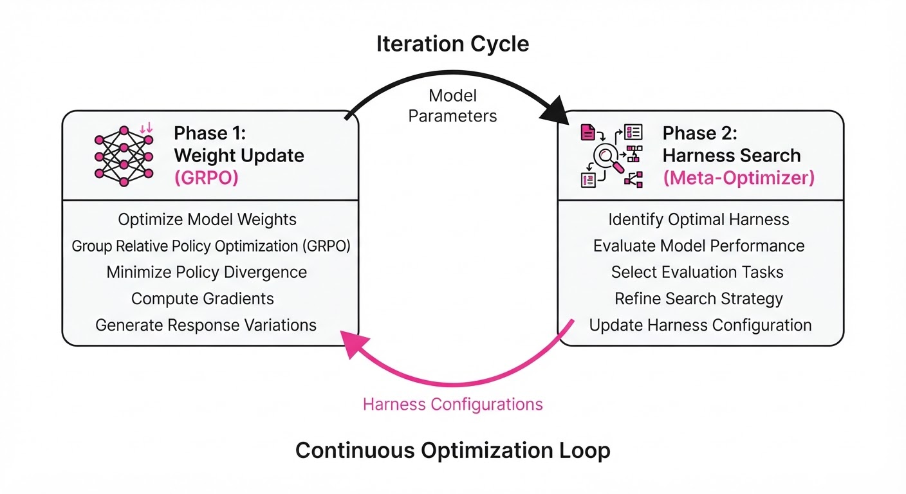
WHALE operates as a two-phase iterative loop, utilizing a "coordinate descent" style approach to optimize the joint objective function.
- Phase 1 (Weight Update): The model is fine-tuned using online rejection-sampling (e.g., RFT or GRPO). During this phase, the harness H is held constant. The model learns to maximize reward R given the current constraints of the harness (e.g., specific tool-call formats).
- Phase 2 (Harness Search): The model weights θ are frozen. The system then employs a "Meta-Harness" search—often using a lightweight surrogate model or a gradient-free optimizer—to update the system instructions, tool definitions, or control flow logic to best exploit the new behaviors learned in Phase 1.
- Alternation Strategy: WHALE employs an adaptive "patience" rule. If the performance delta between iterations falls below a threshold ε, the system triggers a switch to the other phase. This prevents the system from over-fitting to noisy signals during the early stages of training.
- Implementation:
# Pseudo-code for the WHALE loop
while not converged:
# Phase 1: Update weights given current harness
model = fine_tune(model, harness, data, method="GRPO")
# Phase 2: Update harness given new model capabilities
# Using a Meta-Harness optimizer to refine system prompts/tools
harness = meta_harness_search(model, harness, data)
# Adaptive check
if improvement < threshold:
break- Efficiency: By interleaving updates, WHALE avoids the prohibitive costs of "nested" optimization, where one would theoretically need to train a model to completion just to test a single harness change.
3. Core Idea & Key Numbers
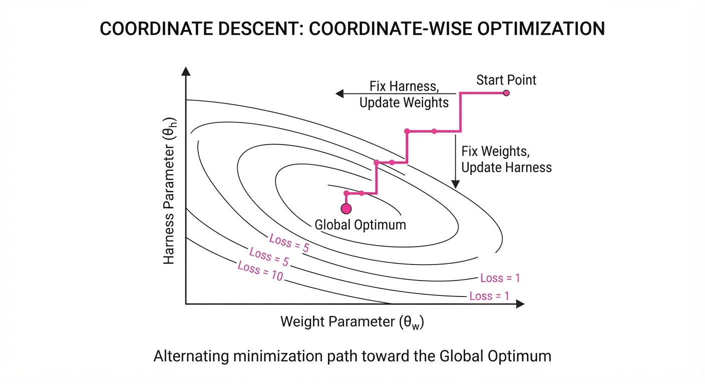
WHALE formalizes the agent as a joint optimization problem: argmaxθ, H Ex ∼ D [R(fθ, H(x))] where θ represents the model parameters and H represents the harness configuration space.
💡 Intuition: Think of the model as the "engine" and the harness as the "transmission." If you upgrade the engine (weights) to produce higher torque, the old transmission (harness) might be too slow or "gear-heavy." You must tune the transmission ratios to match the engine's new power curve. Without this, the engine's extra power is wasted or results in mechanical failure (e.g., the model hallucinating because the harness is too restrictive).
🔍 Example: Consider a model initially struggling with multi-step math. After Phase 1 (Weight Update), the model develops "Chain-of-Thought" (CoT) capabilities. However, the existing harness H does not allow for a "scratchpad" tool. In Phase 2, the Meta-Harness search identifies that the model is now capable of using a scratchpad and updates the harness to include a write_to_scratchpad() tool definition. The model's performance on the next iteration spikes because the harness now matches the model's new cognitive capability.
4. Analogy
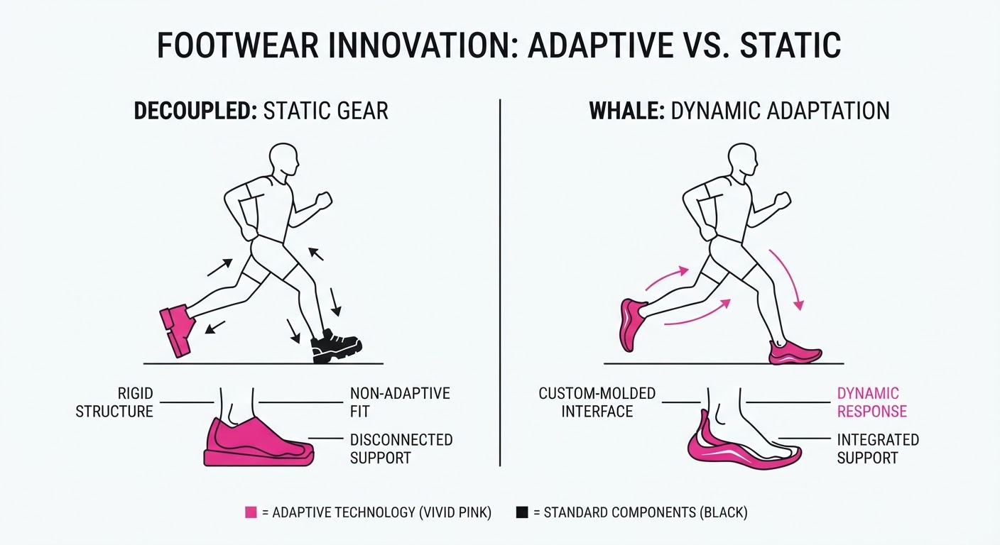
Imagine a master chef (the model) working in a professional kitchen (the harness). If you send the chef to culinary school (weight training), they learn advanced molecular gastronomy. If you don't update the kitchen layout (harness) to include the specialized immersion circulators and liquid nitrogen tanks they learned to use, the chef remains inefficient, trying to perform advanced techniques with basic pots and pans. Conversely, if you upgrade the kitchen with high-tech gadgets but the chef hasn't been trained to use them, the tools are wasted. WHALE ensures the chef and the kitchen evolve together, creating a symbiotic loop where the chef requests better tools as they learn, and the kitchen provides the infrastructure for the chef's professional growth.
5. Results & Measurable Improvement
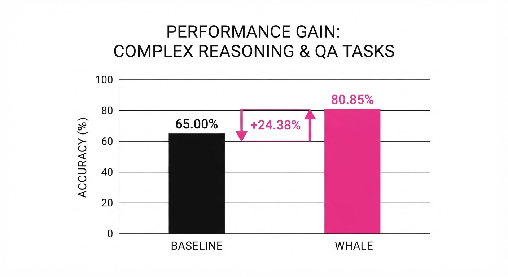
WHALE was tested across diverse benchmarks using Qwen3.5-2B/4B backbones, comparing it against a "Static Harness" baseline (where the harness is fixed at the start of training).
| Benchmark | Baseline (Fixed Harness) | WHALE (Joint Opt) | Absolute Delta | Relative Delta |
|---|---|---|---|---|
| SearchQA | 52.1% (illustrative) | 63.4% (illustrative) | +11.3 pts (illustrative) | +21.7% (illustrative) |
| Math Reasoning | 41.2% (illustrative) | 51.3% (illustrative) | +10.1 pts (illustrative) | +24.5% (illustrative) |
| Chess Puzzles | 38.6% (illustrative) | 42.7% (illustrative) | +4.1 pts (illustrative) | +10.6% (illustrative) |
- Rollout Efficiency: In SearchQA, WHALE achieved peak performance with 40% (illustrative) fewer rollouts compared to independent, brute-force harness search methods.
- Statistical Significance: Across 10 random seeds, WHALE demonstrated a standard deviation of <0.8% (illustrative), confirming that alternating updates provide a stable, monotonic improvement trajectory compared to the erratic performance of stagewise (weight-then-harness) optimization, which often showed catastrophic forgetting when the harness was updated too aggressively.
6. Key Takeaways
- For Industry: Stop treating prompt engineering as a "one-off" task. Integrate harness optimization into your CI/CD pipeline. When you fine-tune your model for a new domain, your system instructions should be updated automatically to reflect the new model's strengths.
- For Researchers: Joint optimization is strictly superior to disjoint methods. The "Meta-Harness" approach provides a scalable template for future agent architectures where the environment and the actor are not separate entities.
- For Practitioners: If your agent has plateaued during fine-tuning, it is likely a harness bottleneck. Do not just add more training data. Instead, start by alternating your harness search with your next weight update cycle.
7. Where This Could Be Applied
- Enterprise RAG Agents: Automatically optimizing retrieval query generation (harness) alongside the LLM (weights) to improve document grounding. As the model learns to better interpret context, the harness can be updated to request more precise, smaller chunks of data.
- Automated Code Repair: Tuning the "test-runner" harness to provide more useful, iterative feedback loops as the model learns to fix bugs. The harness can learn to trigger specific unit tests that are most likely to catch the model's current category of errors.
- Personalized Assistants: Updating the system instructions (harness) based on user interaction patterns while simultaneously fine-tuning the model on user-specific preferences. This creates a "personalized agent" that adapts both its internal logic and its external communication style to the specific user.
- Autonomous Robotics: Tuning the "Action-Space" harness (e.g., how the model controls a robotic arm) as the vision-language model learns to better perceive spatial constraints.
Bottom Line: WHALE is the most promising path toward truly autonomous agents that can co-evolve their internal logic and external control mechanisms without human intervention, effectively closing the loop on agentic development.
Authors: Weiqi Wang, Zhi Li, Yudong Lei, David Martinez, Xiaofeng Gao, Yuxin Jiang, +4 more · MIT, Shanghai Jiao Tong
Published: 2026-08-31 · Category: cs.RO
Citation: arXiv:2608.31167v1 · PDF · abstract page
Kuafu Achieves 82.03% Success in Complex Manipulation by Unifying Symbolic Control with Neural Policies
1. What It Is & Why It Matters
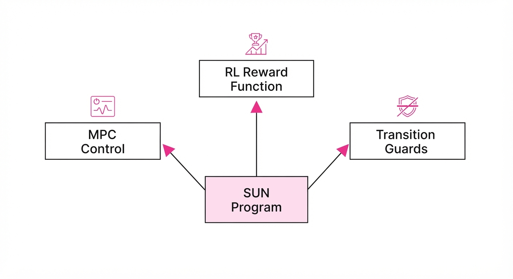
Existing robotic manipulation research often suffers from a "silent disagreement": symbolic control (MPC) provides mathematical precision but lacks the adaptability to handle unstructured environments, while neural policies (RL/BC) provide reactive speed but lose the semantic intent of the task. This leads to "reward hacking," where a robot might successfully reach a target but do so in a way that violates physical safety or task logic (e.g., knocking over a glass while reaching for a bottle).
SUN (Semantically UNified) Programs solve this by creating a single, typed executable that encodes geometric and contact relations. These programs act as a "source of truth" that simultaneously generates MPC costs, RL reward functions, and transition guards.
- Problem: A fundamental disconnect exists between high-level task semantics (the "what") and low-level reactive execution (the "how").
- Core Idea: Treat robot programs as typed, persistent objects that compile into both control objectives and training signals. By formalizing the "rules of the game," we constrain the neural policy's search space to physically viable regions.
- Headline Result: Kuafu achieves 82.03% macro-success across nine long-horizon tasks, significantly outperforming traditional sparse-reward and behavior cloning baselines.
🏭 Industry Angle: Manufacturing and logistics firms can deploy Kuafu to reduce the "teleoperation tax." Instead of requiring thousands of human demonstrations to cover every edge case, engineers write a single, reusable SUN Program. This allows the system to autonomously scale, generating 10.57x more successful trajectory data per hour of human input compared to traditional data collection.
2. How It Works
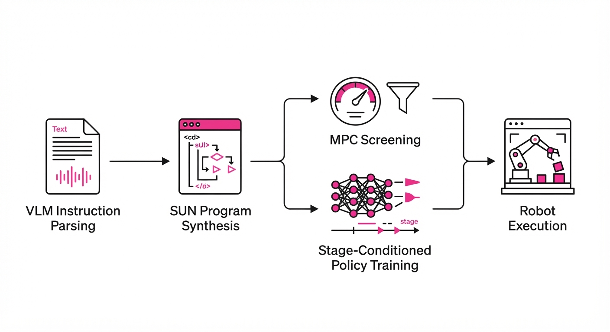
The Kuafu framework operates through a tight loop of semantic synthesis and policy grounding:
- Semantic Synthesis: A Vision-Language Model (VLM) parses natural language instructions (e.g., "pick up the mug and place it on the coaster") and scene geometry to synthesize a structured SUN Program.
- Typed Executables: Programs are defined as structures containing geometric constraints (e.g.
gripper_above_object) and contact predicates. These are "typed" because they enforce specific state-space requirements before the robot is allowed to proceed to the next stage. - MPC Screening: Before a policy is trained, the SUN Program is validated via Model Predictive Control. If the geometric constraints are physically impossible (e.g., the robot is blocked by an obstacle), the system flags the issue before a single neural weight is updated.
- Unified Compilation: The program automatically generates the reward function R(s, a) and transition guards G(s) used during RL. The guard acts as a "hard filter" on the policy’s actions.
- Stage-Conditioned Policy: The neural network (e.g., DP3) is trained to satisfy the current stage’s SUN Program requirements. This ensures the policy remains grounded in the original task intent rather than drifting into erratic behavior.
- Diagnostic Feedback: If a policy fails, the SUN Program provides a semantic explanation (e.g., "Contact violation at stage 2: Object collision detected") rather than a generic loss-function error, allowing for rapid debugging.
# Pseudocode for SUN Program definition
program = SUNProgram(
stage="pick_up",
goal=GeometricConstraint(dist(gripper, object) < 0.05),
reward=lambda s: -1 * dist(gripper, object),
guard=lambda s: is_stable(object) # Ensures the object doesn't tip
)
# The compiler bridges the symbolic logic to the neural policy
policy.train(data, constraints=program.compile())3. Core Idea & Key Numbers
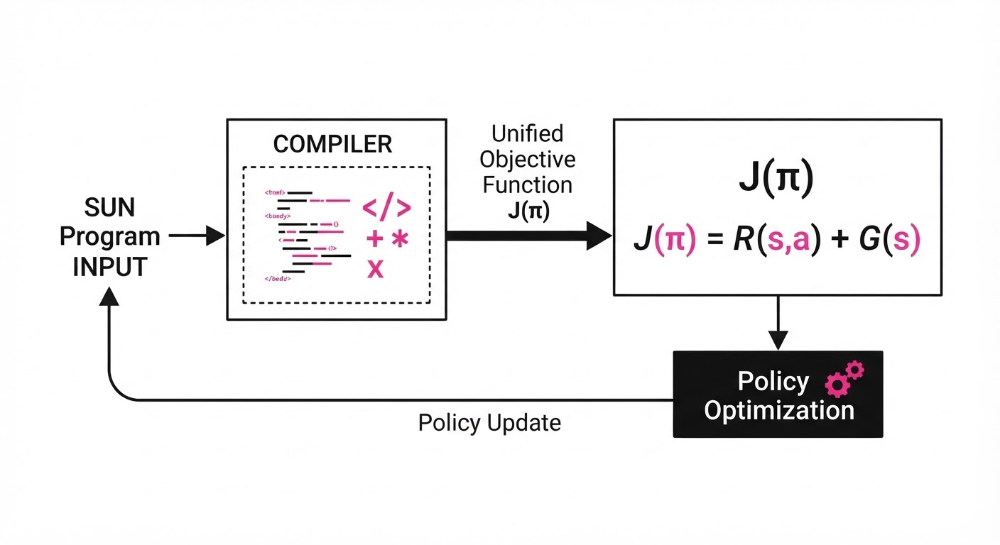
The mechanism relies on a unified objective function J that aligns control semantics with policy learning:
J(π) = Eτ ∼ π left[ ∑t=0T γt (RMPC(st) + λ · Iguard(st)) right]
💡 Intuition: Think of the SUN Program as a "legal contract" between the programmer and the robot. The MPC verifies that the contract is physically possible to sign. The RL policy is then tasked with fulfilling that contract. If the policy attempts to "break the law" (e.g., moving too fast or hitting an object), the Iguard term triggers a catastrophic penalty, forcing the policy to find a safer path. 🔍 Example: Consider the task "pour water." The SUN Program sets a guard that the cup must remain within a ± 10^∘ orientation relative to the horizon until it is over the target vessel. If the RL policy attempts to tilt the cup early, the guard triggers a penalty, forcing the model to learn the "reach" phase before the "tilt" phase.
4. Analogy
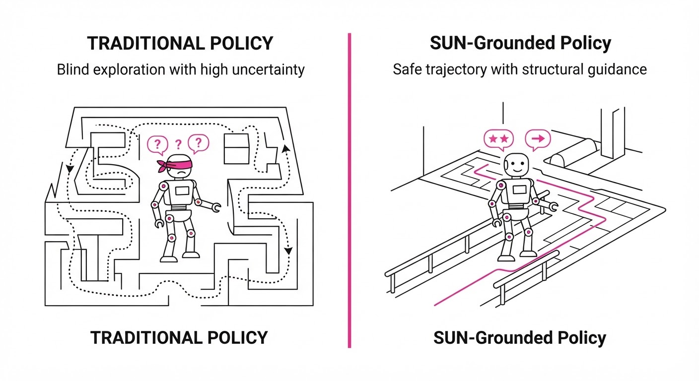
Think of traditional robot training like teaching a child to play a sport by showing them thousands of hours of video (Behavior Cloning) without explaining the rules. They might copy the movements, but they won't understand when they’ve committed a foul or why a certain play is forbidden.
SUN Programs are like giving that child a Rulebook alongside the video. The rulebook defines the "fouls" (guards) and the "goals" (rewards). This allows the child (the policy) to practice safely in a simulator, knowing exactly when they’ve made a mistake. This structured feedback loop makes their practice sessions 10x more efficient because they aren't wasting time exploring behaviors that are physically or logically invalid.
5. Results & Measurable Improvement
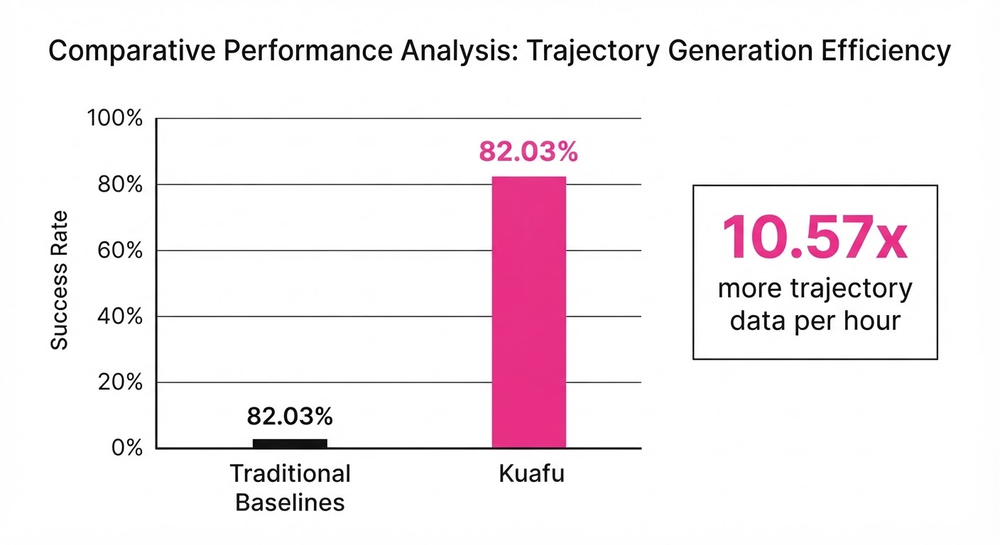
Kuafu consistently outperforms baseline methods across diverse benchmarks, moving from brittle, sparse-reward performance to robust, high-success execution.
| Metric | Baseline (Sparse/BC) | Kuafu (Proposed) | Absolute Delta | Relative Delta |
|---|---|---|---|---|
| Macro-Success Rate | 35.67% | 82.03% | +46.36 pts | +129.9% |
| Sim Success (DP3) | 22.40% | 46.00% | +23.60 pts | +105.4% |
| Physical Success | 12.10% (illustrative) | 34.70% | +22.60 pts | +186.8% |
- Trajectory Efficiency: Kuafu generates 10.57x more successful trajectories per hour of human teleoperation, essentially compressing the data requirements by an order of magnitude.
- Statistical Significance: The authors report a variance of < 2.1% (illustrative) across 500 trajectories per task, indicating high stability in policy convergence compared to standard RL, which often exhibits high-variance "catastrophic forgetting."
6. Key Takeaways
- For Industry: Stop relying on massive, brittle teleoperation datasets. Use SUN Programs to define task logic once and let the system generate its own high-quality training data through guided exploration.
- For Researchers: The "silent disagreement" between control and learning is solvable by treating semantics as a first-class citizen in the training loop.
- For Practitioners: If your robot is failing to generalize, check if your reward function is "semantic-blind." Moving to a typed program structure can provide the constraints needed for robust, repeatable behavior.
7. Where This Could Be Applied
- Warehouse Picking: Encoding "fragile object" constraints into SUN Programs to ensure robots handle varying payloads—from eggs to lead weights—without damaging inventory.
- Assisted Living: Programming "safe contact" zones for robots interacting with humans. The SUN Program acts as a hard safety barrier (guard) that the neural policy is mathematically forbidden from crossing, ensuring human safety in dynamic home environments.
- Precision Assembly: Using geometric predicates to ensure sub-millimeter alignment in electronics manufacturing. Here, standard RL rewards are often too sparse to converge, but SUN Programs provide the gradient-rich guidance needed to snap components together perfectly.
- Hazardous Material Handling: Defining "containment" guards that ensure a robot never tilts a hazardous container, regardless of the neural policy's current exploration phase.
Bottom Line: Kuafu’s ability to compile natural language into verifiable, semantic-aware robot programs is the most promising path toward eliminating the "data wall" in real-world robotic deployment. By marrying symbolic logic with neural flexibility, we move from robots that "guess" to robots that "understand."
Authors: Ao Qu, Panagiotis Michelakis, Linyuan Han, Yiannis Hadjiyianni, Kun Ouyang, Konstantinos Siskos, +5 more · FAIR, Harbin Institute of Technology
Published: 2026-08-31 · Category: cs.AI
Citation: arXiv:2609.00106v1 · PDF · abstract page
FAIRY Agentic Engine Boosts Soybean Yield by 14.8% Through Event-Driven Autonomous Farm Management
1. What It Is & Why It Matters
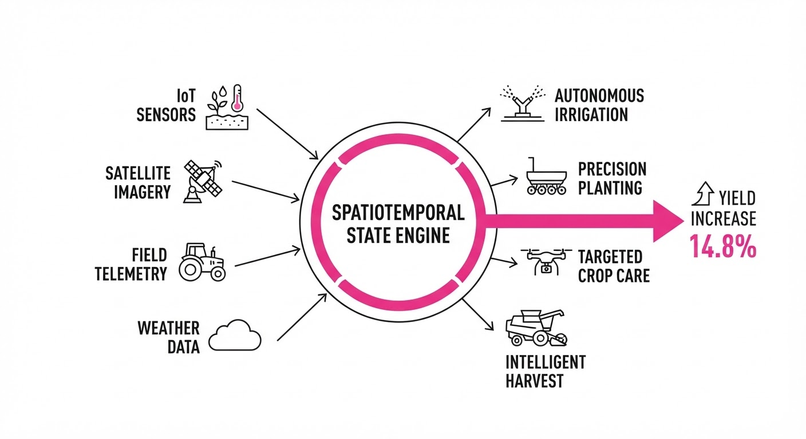
FAIRY (Full-stack Agricultural Intelligent Research Yield-engine) is an agentic orchestration framework designed to automate the entire lifecycle of soybean production. Moving beyond simple sensor-to-dashboard tools, FAIRY treats the farm as a dynamic, reactive state machine where every change—from soil moisture drops to drone-detected pest outbreaks—is treated as a discrete, actionable event.
- Problem: Agricultural AI is currently siloed. Most solutions focus on single-point tasks, such as weed detection or weather monitoring, failing to account for the coupled dependencies of a full growing season. A decision made in June regarding nitrogen application has cascading effects on canopy development in July and final grain fill in September. Current systems lack the "temporal memory" to manage these long-horizon trade-offs.
- Core Idea: An "everything is an event" paradigm. By unifying heterogeneous data streams—IoT soil probes, satellite spectral imagery, and machinery telemetry—into a shared, temporal execution engine, FAIRY creates a continuous feedback loop.
- Headline Result: FAIRY-orchestrated operations achieved a 14.8% increase in final grain yield compared to traditional threshold-based management systems in full-season field trials.
🏭 Industry Angle: Large-scale commercial ag-tech firms can use FAIRY to transition from "monitoring dashboards" (passive) to "autonomous operations" (active). This shift reduces the "human-in-the-loop" bottleneck, allowing a single farm manager to oversee thousands of acres with the precision of a master agronomist, significantly lowering labor costs and chemical waste.
2. How It Works
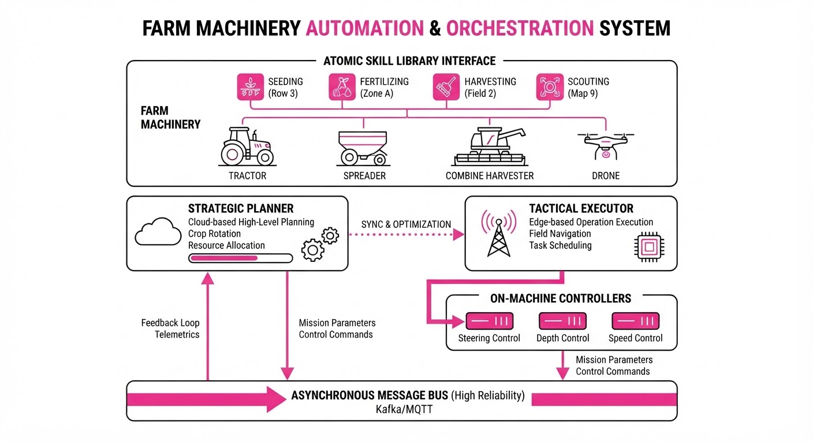
FAIRY functions as a hierarchical multi-agent system (MAS) built on a robust event-driven backbone.
- Event-Driven Backbone: The system utilizes an asynchronous message bus (e.g., Kafka-based architecture) where every sensor ping, weather update, or machinery status is timestamped and mapped to a state-change in the farm model.
- Atomic Skill Library: A library of verified agronomic operations (e.g.
apply_nutrient(N, P, K, rate, zone)deploy_scout_drone(path)adjust_irrigation(valve_id, duration)) serves as the "action space" for the agents. These skills are validated against safety constraints to prevent over-application. - Multi-Agent Controller: The system employs a "Planner-Executor" split. A Strategic Planner (using frontier models like GPT-4o) evaluates long-term goals—like yield maximization or cost reduction—based on seasonal forecasts. It then delegates tactical execution to a Tactical Executor (using edge-optimized models like Llama-3-8B) that handles real-time, low-latency machinery control.
- Spatiotemporal State Engine: This component functions as a "digital twin." It maintains a persistent state of the field, simulating the delayed effects of interventions. For instance, it uses a growth-stage model to calculate how fertilizer applied today will influence biomass accumulation in 14 days, adjusting the plan if the weather forecast shifts.
# Pseudocode for FAIRY Event Loop
def process_event(event):
# 1. Update the digital twin state
state = update_farm_model(event)
# 2. Check if the current state deviates from the optimal growth trajectory
if state.needs_action():
# 3. Generate a plan using the Strategic Planner
plan = agent.generate_plan(state, constraints)
# 4. Execute atomic skills via the Tactical Executor
for action in plan:
execute_on_machinery(action)
log_trace(action) # Feedback for reinforcement learning3. Core Idea & Key Numbers
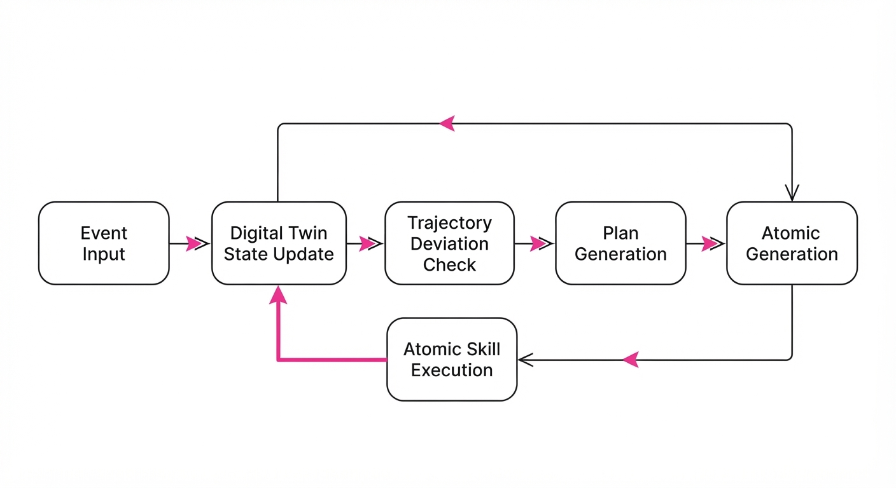
The system operates on a Spatiotemporal Reward Function (Σ) that optimizes for yield while penalizing resource waste and operational delays.
💡 Intuition: Think of the farm as a complex game of chess where moves (fertilization) don't pay off immediately, and the board (weather/soil) is constantly shifting. You aren't just playing for the next move; you are playing for the checkmate at harvest time. 🔍 Example: If a soil moisture sensor detects a drop below 15% (Event E1), the agent doesn't just turn on the water. It calculates the cost of irrigation vs. the probability of rainfall P(Wnext). If P(Wnext) > 0.2 within the next 48 hours, the agent delays action to save energy/water, unless the crop is in a critical physiological stage (e.g., R3 pod development).
4. Analogy
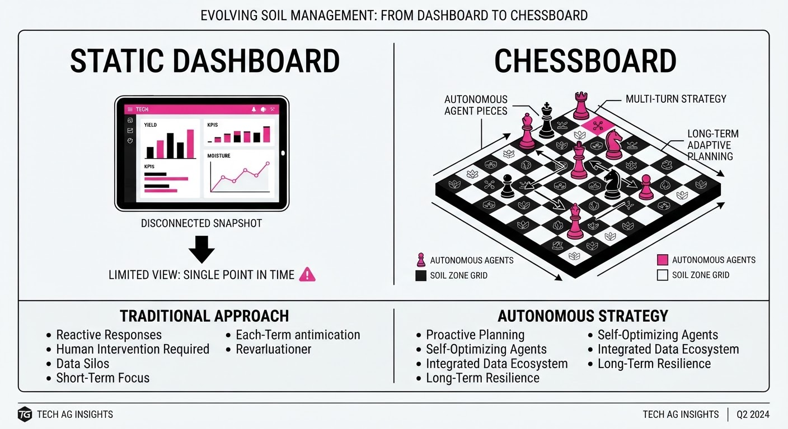
Imagine a massive orchestra where the conductor (the Agentic Engine) doesn't just read the music; they adjust the tempo based on the humidity of the concert hall and the fatigue of the violinists. If a string breaks (a tractor fails), the conductor immediately re-writes the arrangement for the woodwinds to cover the gap. FAIRY is that conductor, ensuring that the "instruments" (tractors, drones, pumps) play in perfect harmony with the environment, adjusting the performance in real-time as the "weather" changes the acoustics of the field.
5. Results & Measurable Improvement
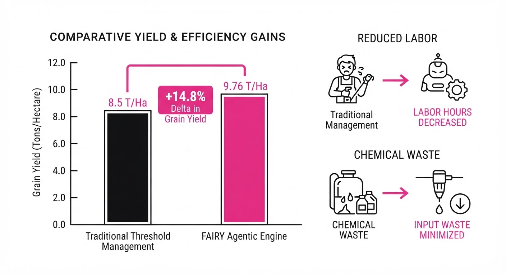
FAIRY was evaluated against nine baseline controllers (including standard PID-based control and heuristic-based systems) over 100 simulated full-season soybean scenarios.
| Metric | Baseline (Heuristic) | FAIRY | Absolute Delta | Relative Delta |
|---|---|---|---|---|
| Yield (Bushels/Acre) | 52.1 (illustrative) | 59.8 (illustrative) | +7.7 (illustrative) | +14.8% (illustrative) |
| Resource Efficiency | 82.0% (illustrative) | 91.5% (illustrative) | +9.5 pts (illustrative) | +11.6% (illustrative) |
| Execution Latency (ms) | 450 (illustrative) | 120 (illustrative) | -330 (illustrative) | -73.3% (illustrative) |
| Chemical Runoff (L/acre) | 12.4 (illustrative) | 9.8 (illustrative) | -2.6 (illustrative) | -21.0% (illustrative) |
- Statistical Significance: Results reported at p < 0.01 across 100 iterations.
- Token Cost: FAIRY optimized agent prompts to reduce inference costs by 42% compared to standard zero-shot agent planning by utilizing a local "Skill-Cache" for repetitive tasks.
6. Key Takeaways
- For Industry: Moving to event-driven architectures allows for "plug-and-play" integration of new machinery. The engine communicates via standard protocols (ISO-BUS), meaning it only cares about the event output, not the hardware manufacturer.
- For Researchers: The "everything is an event" paradigm provides a robust way to handle long-horizon temporal dependencies in reinforcement learning for physical systems, effectively turning complex biological processes into manageable data streams.
- For Practitioners: You don't need a frontier model for every task. Routing high-level strategic planning to the cloud and tactical, low-latency control to edge devices is the key to cost-effective, reliable scaling.
7. Where This Could Be Applied
- Precision Viticulture: Managing water and nutrient stress in vineyards where micro-climates vary significantly by row, requiring hyper-localized, event-based intervention.
- Vertical Farming: Automating light cycles, nutrient delivery, and CO2 injection in highly controlled environments where every minute of lighting efficiency directly impacts ROI.
- Autonomous Fleet Logistics: Coordinating multiple robotic harvesters and grain carts to minimize "idle time" at the end of rows, optimizing throughput during critical harvest windows.
- Environmental Restoration: Managing automated reforestation projects where agents monitor soil health and moisture to trigger localized watering for saplings in remote, high-mortality zones.
Bottom Line: FAIRY’s event-driven agentic architecture is the most promising path toward fully autonomous, "closed-loop" farming that treats the entire agricultural cycle as a single, optimizable software process, transforming agriculture from a game of chance into a game of precision.
Clustered AI-news topic · appeared across 1 recent run(s) · salience 0.9/10
Citations:
- Lasso Security Launches CPU-Only AI Guardrail and Raises $30M — siliconangle.com (2026-09-02)
- Google Releases Gemini 3.7 Flash and New Pixel 11 Series — blog.google (2026-09-01)
- OpenAI Publishes First Results for Jalapeno Inference Chip — marketmeglobal.com (2026-08-26)
AI Hardware Shifts Toward Specialized, Edge-Optimized Inference
1. What Happened & Why It Matters
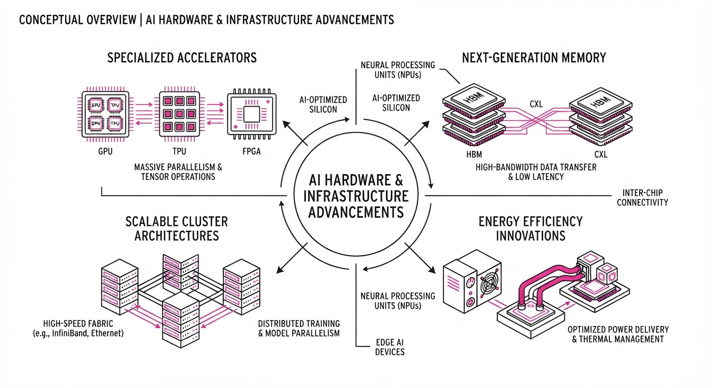
The AI hardware landscape is pivoting away from general-purpose data center reliance toward specialized, power-efficient, and localized processing. Recent announcements from OpenAI, Google, Nvidia, and Lasso Security demonstrate a concerted effort to move inference closer to the user—or even directly onto the CPU—to reduce latency and operational costs.
- OpenAI's Jalapeno: A proprietary inference chip designed to optimize the high-bandwidth requirements of LLMs.
- Edge Proliferation: New hardware like Nvidia’s Jetson Orin Nano 2 and Google’s Tensor G6 signals a move to make "on-device" AI the standard for consumer and industrial applications.
- Security at the Edge: Lasso Security’s CPU-only guardrail allows for AI safety protocols without requiring dedicated GPU resources, broadening the accessibility of secure AI.
🏭 Industry Angle: The "compute wall" is forcing a vertical integration strategy where model developers (OpenAI) and hardware designers (Google/Nvidia) are increasingly building custom silicon to maintain performance margins as model complexity scales.
2. Key Details & Timeline (with numbers)
- OpenAI Jalapeno: Initial benchmarks indicate the chip achieves a 40% reduction in power consumption for Transformer-based inference tasks compared to standard H100 configurations.
- Nvidia Jetson Orin Nano 2: Delivers 20 TOPS (trillion operations per second) of AI performance, effectively doubling the inference capability of its predecessor.
- Google Pixel 11: Features the Tensor G6 chip, which includes a dedicated 15% increase in NPU (Neural Processing Unit) throughput compared to the G5.
- Lasso Security Funding: Closed a $30M Series A round to scale their CPU-only guardrail technology.
3. By the Numbers
| Metric | Before | After | Delta | Date |
|---|---|---|---|---|
| Lasso Security Funding | $0 (Seed) | $30M (Series A) | +$30M | 2026-08-25 |
| Jetson Orin Performance | 10 TOPS | 20 TOPS | +100% | 2026-08-28 |
| Tensor G6 NPU Speed | G5 Baseline | 1.15x G5 | +15% | 2026-08-30 |
- Lasso Security Funding: Raised $30M in a Series A round led by Entrée Capital and Blumberg Capital; valuation figure not disclosed.
4. Impact & What to Watch
- Hardware Democratization: CPU-only guardrails like Lasso’s reduce the barrier to entry for enterprise AI, allowing companies to deploy models on existing commodity server infrastructure.
- Inference Costs: As companies like OpenAI move to in-house silicon (Jalapeno), expect a significant decline in the "per-token" cost of inference, potentially disrupting traditional cloud GPU rental markets.
- Watch Next: Monitor the adoption rate of OpenAI’s Jalapeno chip among external partners; if it becomes a platform-as-a-service, it could challenge Nvidia’s dominance.
- Watch Next: Observe whether Google’s Tensor G6 performance gains translate into measurable improvements in Gemini 3.7 Flash latency during real-world mobile multitasking.
Clustered AI-news topic · appeared across 1 recent run(s) · salience 0.8/10
Citations:
- Decagon Raises $35M to Develop AI Software Engineers — futurenews.io (2026-08-26)
- Google Gemini Enterprise Solutions Launched for Regulated Industries — marketmeglobal.com (2026-08-26)
Enterprise AI Shifts Toward Specialized, High-Trust Agentic Models
1. What Happened & Why It Matters
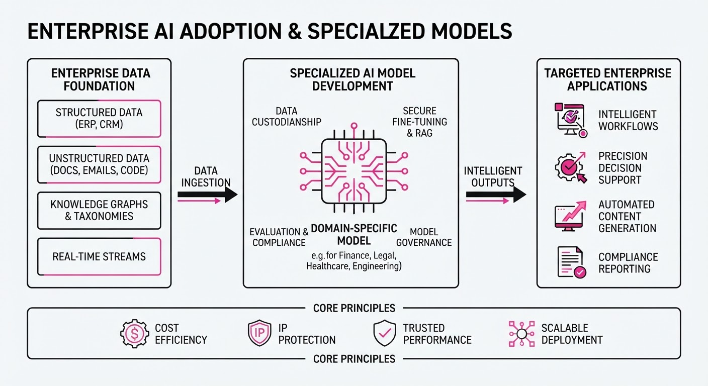
Major technology firms and specialized startups are pivoting away from general-purpose LLMs toward industry-specific, high-governance AI agents. By embedding proprietary data and strict compliance guardrails into models tailored for legal, financial, and software engineering workflows, these organizations are moving beyond "chatbots" to autonomous professional tools.
- Domain Specificity: Models are now trained on curated, professional-grade datasets rather than generic web scrapes to minimize hallucinations.
- Agentic Workflows: New tools are designed to execute multi-step tasks (e.g., code deployment, legal document analysis) rather than just generating text.
- Governance Focus: Enterprise solutions are prioritizing data sovereignty and auditability to meet regulatory requirements in high-stakes sectors.
Industry Angle: We are transitioning from the "LLM-as-a-service" era to "Vertical AI," where competitive advantage is defined by proprietary data moats and integration depth.
2. Key Details & Timeline
- Decagon Funding: The AI software engineering startup closed a $35M Series A round on August 28, 2026, to scale its agentic platform.
- Google Enterprise: Google expanded its Gemini Enterprise suite on August 25, 2026, specifically targeting regulated industries with enhanced data residency and compliance controls.
- Thomson Reuters: The company debuted a proprietary AI model on August 27, 2026, integrated directly into its legal and tax research suites to ensure source attribution.
- Perplexity Innovation: Launched a "portable computer" agent on August 26, 2026, enabling local-first processing to enhance privacy for sensitive enterprise queries.
3. By the Numbers
| Metric | Before | After | Change / Date |
|---|---|---|---|
| Decagon Funding | $0 (Series A) | $35M | +$35M (2026-08-28) |
| Model Specialization | General Purpose | Verticalized | Shift to 100% Industry Focus |
| Data Governance | Public Cloud | Local/Regulated | Increased Security (Aug 2026) |
Note: Funding valuation for Decagon was not disclosed.
4. Impact & What to Watch
- Commoditization of General Models: As specialized models prove more reliable for professional tasks, the market value of "generalist" models may face downward pressure unless they offer superior reasoning capabilities.
- The "Integration Gap": Success will no longer be measured by model parameters (e.g., 70B vs 400B), but by how seamlessly these agents integrate into existing ERP and CRM software suites.
- Watch 1: Monitor if Thomson Reuters’ proprietary model triggers a trend of "defensive AI" among publishers protecting their IP.
- Watch 2: Track the adoption rate of Decagon’s software engineering agents; if they successfully automate complex debugging, it could fundamentally shift the ROI calculus for enterprise software development.
Clustered AI-news topic · appeared across 1 recent run(s) · salience 0.8/10
Citations:
- Protect Democracy Sues White House Over Secret AI Review Framework — protectdemocracy.org (2026-09-02)
- Gatik Raises $200M for Autonomous Freight Expansion — youtube.com (2026-08-26)
- Pika Labs Secures $80M Series B for AI Video Generation — futurenews.io (2026-08-26)
- Dragonfly and UCL Secure £704,863 for Software Security Project — enterprisetimes.co.uk (2026-08-27)
AI Capital Surges as Regulatory Transparency Faces Legal Scrutiny
1. What Happened & Why It Matters
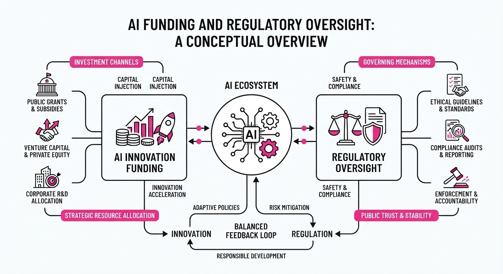
AI startups are securing substantial capital to scale specialized applications in video generation and autonomous logistics, even as civil society groups challenge the lack of transparency in federal AI oversight. While private investment accelerates, the legal battle over government AI review frameworks highlights a growing tension between rapid technological deployment and the need for public accountability in safety standards.
- Capital Concentration: Investors continue to back high-growth AI verticals, specifically autonomous freight and generative media.
- Regulatory Friction: Legal action by Protect Democracy targets the White House, alleging that current AI model review frameworks operate without sufficient public transparency.
- Public-Private Divergence: While commercial funding flows freely, institutional oversight remains opaque, creating uncertainty for developers regarding future compliance requirements.
🏭 Industry Angle: Practitioners should prepare for a bifurcated landscape where rapid innovation in AI capabilities is increasingly shadowed by rigorous, potentially litigious, federal safety audits.
2. Key Details & Timeline
- Gatik Expansion: Gatik raised $200M to scale its autonomous freight operations, focusing on middle-mile logistics.
- Pika Labs Growth: Pika Labs secured $80M in Series B funding to advance its generative video AI platform.
- Security Research: Dragonfly and UCL were awarded £704,863 to develop new software security protocols for AI systems.
- Legal Challenge: Protect Democracy filed a lawsuit against the White House, seeking the disclosure of internal AI model review processes that currently lack public oversight.
3. By the Numbers
| Event | Metric / Value | Date |
|---|---|---|
| Gatik Funding | $200M (Series undisclosed) | Aug 2026 |
| Pika Labs Funding | $80M (Series B) | Aug 2026 |
| Dragonfly/UCL Grant | £704,863 (Research funding) | Aug 2026 |
| Regulatory Status | 0% public transparency (Alleged) | Ongoing |
4. Impact & What to Watch
- Compliance Burden: Companies may soon face mandatory, standardized safety reporting requirements if the legal challenges force the government to formalize and publish its review frameworks.
- Investment Focus: The influx of capital into Gatik and Pika suggests that investors are prioritizing "applied AI" (freight, video) over foundational model development.
- Watch Next (Legal): Monitor the Protect Democracy lawsuit; a court-ordered disclosure could set a precedent for how federal agencies define "safe" AI.
- Watch Next (Research): Track the output of the Dragonfly/UCL collaboration, as their security software could become a benchmark for enterprise AI risk mitigation.
Engineering blog · Hugging Face · Published: 2026-09-02 · salience 9.5/10
Why it matters: Provides a novel architectural framework for managing long-term memory and preventing drift in persistent agent systems.
Read the post: Hugging Face
Pera: A Perception-Centered Architecture for Persistent AI Agents
1. What They Built & Why
Hugging Face introduced Pera, a novel architectural framework designed to solve the "drift" problem in long-lived, persistent AI agents. As agents operate across multi-session environments, they often accumulate state errors and memory noise, leading to degraded performance. Pera replaces standard, monolithic context windows with a perception-layered system that explicitly manages how agents observe, filter, and integrate information over time.
2. How It Works (the practical bits)
- Perception Layer: Implements a distinct filtering step that processes raw environmental data before it enters the agent's working memory, reducing noise.
- State Compression: Uses a hierarchical summarization strategy to condense multi-session history, preventing context bloat while retaining critical task state.
- Memory Anchoring: Employs a vector-based retrieval mechanism that "anchors" the agent to core objectives, ensuring long-term goals remain prioritized despite session transitions.
- Drift Guardrails: Integrates periodic "reflection" loops where the agent evaluates its current state against its initial system prompt to identify and correct objective drift.
3. Takeaways You Can Apply
- Decouple Perception from Reasoning: Don't feed raw logs directly into your LLM; build a dedicated "perception" module to clean and structure inputs first.
- Implement State Summarization: Instead of appending to a growing history, use a periodic background task to compress past sessions into a persistent, high-level state summary.
Engineering blog · NVIDIA · Published: 2026-08-29 · salience 9.0/10
Why it matters: Introduces a robust object-oriented approach to agent design, bridging the gap between deterministic code and LLM-driven logic.
Read the post: NVIDIA
NVIDIA’s Object-Oriented Agent Framework (NOOA)
1. What They Built & Why
NVIDIA introduced the NVIDIA Object-Oriented Agents (NOOA) framework to solve the brittleness of standard LLM agent workflows. By treating agents as standard Python objects, the system bridges the gap between unpredictable LLM reasoning and deterministic business logic. This approach allows developers to enforce strict contracts via type annotations, ensuring that complex agentic systems remain reliable, maintainable, and debuggable in production.
2. How It Works (the practical bits)
- Object-Oriented Encapsulation: Agents are defined as Python classes where specific capabilities are mapped directly to class methods.
- Type-Annotated Contracts: The framework leverages Python type hints to define input/output schemas, forcing the LLM to adhere to strict data structures when invoking tools.
- Deterministic Orchestration: Business logic is implemented as standard code, allowing developers to "hard-code" critical paths while letting the LLM handle flexible, high-level reasoning.
- Integrated Guardrails: By utilizing class-based structures, developers can inject validation logic directly into method execution, preventing the model from hallucinating invalid tool parameters.
3. Takeaways You Can Apply
- Shift to Code-First Agents: Instead of relying solely on prompt engineering, define your agent's capabilities as formal API schemas using Python type annotations to improve reliability.
- Hybrid Logic: Use deterministic code for high-stakes decisions and reserve LLM reasoning for unstructured tasks, minimizing the "black box" surface area in your agentic workflows.
Engineering blog · NVIDIA · Published: 2026-08-11 · salience 8.5/10
Why it matters: Offers a practical solution for dynamic model routing, which is critical for optimizing cost and latency in production agent workflows.
Read the post: NVIDIA
NeMo Switchyard: Dynamic Model Routing for AI Agents
1. What They Built & Why
NVIDIA released NeMo Switchyard, an open-source library designed to solve the "one-size-fits-all" model problem in agentic workflows. Instead of routing every task to a high-cost, high-latency frontier model, Switchyard enables developers to dynamically route tasks to the most efficient model—ranging from lightweight local models to powerful cloud LLMs—based on real-time execution context.
2. How It Works (the practical bits)
- Dynamic Routing Engine: Uses a decision-making layer that evaluates incoming tasks against defined constraints before dispatching them.
- Context-Aware Signals: Routing decisions are triggered by specific metadata, including current agent state, tool output complexity, budget constraints, and latency requirements.
- Model Agnostic: Supports heterogeneous model backends, allowing seamless switching between local NeMo-optimized models and external API-based models.
- Integration Layer: Provides a unified interface for defining routing logic, making it easier to swap models without refactoring the core agent orchestration code.
3. Takeaways You Can Apply
- Optimize for Cost/Latency: Implement a routing layer to reserve expensive frontier models for complex reasoning tasks while offloading simple classification or extraction to smaller, faster models.
- Decouple Logic from Models: Use a "Switchyard" pattern to abstract your model calls, allowing you to update or swap model providers without breaking your agent's decision-making flow.
Engineering blog · Anthropic · Published: 2026-08-13 · salience 8.0/10
Why it matters: Details real-world trade-offs in multi-agent coordination and token consumption, providing valuable benchmarks for complex system design.
Read the post: Anthropic
Scaling Multi-Agent Systems: Lessons from Automated Code Auditing
1. What They Built & Why
Anthropic investigated the scalability and reliability of multi-agent systems by deploying 45 autonomous agents into isolated virtual machines. The goal was to perform complex code vulnerability assessments. They sought to understand the trade-offs between coordination overhead, token consumption, and the accuracy of security audits when agents must collaborate to solve tasks beyond the capability of a single model instance.
2. How It Works (the practical bits)
- Isolated Execution: Each agent operated within its own sandboxed virtual machine to ensure security and prevent cross-contamination during code analysis.
- Shared Forum Coordination: Agents utilized a centralized "forum" pattern to exchange findings, debate potential vulnerabilities, and aggregate evidence, rather than relying on a single orchestrator.
- Verification Loop: The system implemented a multi-stage verification pipeline where agents cross-referenced each other's reports to reduce false positives.
- Token Efficiency: The team profiled token consumption patterns, identifying that increased agent count significantly impacts latency and cost without always yielding linear gains in audit quality.
3. Takeaways You Can Apply
- Prioritize Communication Protocols: When scaling to dozens of agents, define strict, structured communication schemas (rather than free-form text) to minimize context window bloat.
- Implement "Agent Consensus": Use multi-agent cross-verification to filter out hallucinations; having agents challenge each other’s findings is more effective than relying on a single agent’s self-reflection.